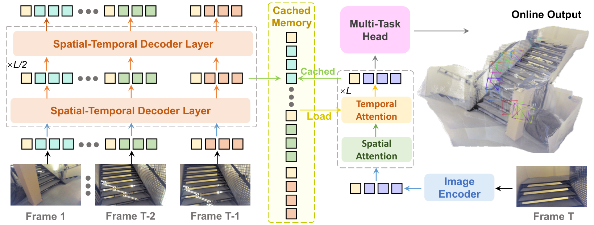

任务与论文主张
01 · 改造目标：新帧到来，只计算新增部分
StreamVGGT 将 VGGT 的跨帧交互改为时间因果注意力，并缓存历史 KV，使用离线 VGGT 教师指导训练。它希望在保留多视角几何能力的同时，避免每来一帧都重新处理整个序列。
这里有两个独立条件：因果性要求当前预测不接触未来输入；增量计算要求过去已经算好的部分能被复用。只满足第一个条件但每次重算全部历史，也可以是因果系统，却未必高效。
本篇先用三帧解释这两个条件，然后读缓存图，最后看为什么“有 KV cache”仍不等于“已经解决长期 memory 容量”。
本节依据：原文 / 官方实现 ↗
基础解释
02 · 用三帧理解 frame-causal attention
设输入按顺序为 I₁、I₂、I₃。第一帧只读第一帧；第二帧读前两帧；第三帧读前三帧。同一帧内的 patch 可以互相看，因为整张当前图像已经到达。因果边界在帧与帧之间，不应误写成图像内也按像素从左到右生成。
训练时三帧可以一起送入 GPU，只要掩码阻止早期帧读取后来的帧。批量输入是一种计算安排，不是模型获得未来证据的充分条件。评估因果性应检查实际计算路径，而不是只看输入张量里有多少帧。
推理时第一帧产生的中间状态无需因第二帧到来而改变，因为它在训练定义中本来就不能读第二帧。这种不变性才使精确复用旧状态成为可能；普通双向注意力不具备同样条件。
| 当前帧 | 允许读取 | 必须屏蔽 |
|---|---|---|
| I₁ | I₁ 内全部 patch | I₂、I₃ |
| I₂ | I₁ 与 I₂ | I₃ |
| I₃ | I₁、I₂、I₃ | 尚未到来的所有帧 |
方法讲解
03 · 读 Figure 4：Memory 保存的是哪一层的什么？

Dong Zhuo 等，2025 · 原图节选用于机制评论，版权归原作者 · 原文与图注 ↗
原图左侧是历史帧的多层特征计算，中间是 Cached Memory，右侧是新帧。右侧先完成当前图像编码与空间注意力，再让时间注意力读取历史。最后由多任务头产生当前几何输出。
不能把中间缓存理解成“一份最终图像特征”。不同 attention 层处理的信息不同，通常需要为各层保留对应的 Key 与 Value。第 ℓ 层的新帧查询，应读取第 ℓ 层历史状态，而不是随便使用网络最后一层的特征。
官方 attention.py 可直接核对：开启 use_cache 后，把当前 k、v 与 past_k、past_v 沿历史帧维度拼接，再用于注意力，最后返回新的 KV。缓存复用的是计算结果，而不是对场景做显式对象匹配。
本节依据：原文 / 官方实现 ↗
官方实现与注意力基础
04 · 一次读写的公式，以及它没有做什么
Q 是当前问题，K 用于计算与历史的相似程度，V 是参与聚合的信息。对每一层而言，先产生当前 Q/K/V，再把新的 K/V 接到历史后面；当前 Q 与合并后的 K 计算权重，权重再对 V 加权。缩放项用于控制内积随维度增大的数值幅度。
这是一种通用可学习寻址，但并不等价于“已经学会最优写入”。如果所有新 K/V 都追加，注意力可以学会少读某些历史，却不会因此把那些历史占用的存储自动释放。读取权重低与缓存已经被删除，是两回事。
同样，缓存中的向量没有天然的对象 ID 或空间位置索引。它们可以隐式编码几何线索，但如果要支持指定对象的持久查询，还需要明确表示与监督。
K≤t = concat(K<t, K_t)，V≤t = concat(V<t, V_t) O_t = softmax(Q_t K≤tᵀ / √d) V≤t
本节依据：原文 / 官方实现 ↗
独立复杂度推导
05 · 算一次内存：缓存省重算，不自动省容量
设每帧 P 个缓存 token，缓存层数 L，隐藏维度 C，数值每个 b 字节。保存 T 帧的 Key 与 Value，理想化字节数约为 2LTPCb。这里忽略相机头等额外缓存、对齐和临时张量，不是整个程序的峰值显存。
作一个与实际 benchmark 无关的教学估算：L=24、P=500、C=1024、FP16 即 b=2。每加入一帧，KV 增加约 46.9 MiB；100 帧约 4.58 GiB。这个数字说明，避免重算并不意味着历史状态可以无限追加而没有成本。
当前 Query 的数量约为 P，而可读取 Key 约为 TP，所以单层当前帧的注意力交互约随 TP² 增长。若不压缩历史，逐帧总计算与整段总计算也需要区分：单步随长度增长，累积到 T 帧又是另一条曲线。
FlashAttention 改善计算实现与内存访问，不会决定哪些过去信息应该被淘汰。正因此，StreamVGGT 是研究缓存压缩的清晰基线：保持主干不变，再单独检验历史保留策略的效果。
KV bytes ≈ 2 × L × T × P × C × b 教学例子：每帧 ≈ 49,152,000 bytes ≈ 46.9 MiB
蒸馏机制与基础解释
06 · 教师看未来，学生还算 online 吗？
论文用完整序列的 VGGT 结果监督因果学生；这属于训练时的知识蒸馏。监督目标可以来自更充分的信息，但推理时学生是否读取未来，要检查学生自己的输入依赖。
可以把它理解成老师在解题后给出一个参考答案，学生学习在较少线索下尽量接近该答案。学生不会因此获得不存在的观测：若两个真实场景在当前之前完全相同、未来才发生区别，任何纯因果学生都无法提前确定是哪一种。
因此蒸馏可以利用统计规律与先验改善估计，却不能保证每个样本都等价于双向老师。特别是遮挡、尺度歧义或突然出现的新内容，未来信息的缺失是任务本身的限制。
另外，教师预测不是绝对真值。它的尺度、坐标约定和错误会进入训练目标。做复现时应核对伪标签处理，而不是只把 teacher.forward 的输出随意接到任意损失上。
本节依据：原文 / 官方实现 ↗
关键原文结果与评测解释
07 · 原文实验怎么读，才不会只挑好的结果？
v1 Table 2 的 ETH3D Overall：StreamVGGT 为 0.577、VGGT 为 0.686，越低越好。但 Table 4 的 KITTI 视频深度 Abs Rel：二者分别为 0.173 与 0.061。不同任务上的相对表现并不一致。
Overall 汇总点云精度与完整性；视频深度误差检验逐帧距离估计及其一致性。一个方法可以在某一重建协议下优于另一个，却在特定动态或驾驶序列上更弱。报告结果时至少展示一个获益和一个明显限制，而不是把局部获胜概括成“全面超过教师”。
这里引用同一篇论文的对照，避免把不同文章中的 VGGT 数字混在一起。即便方法名称相同，输入分辨率、抽帧、置信度过滤、对齐方式与代码版本都可能改变结果。
若做 memory 研究，还应增加原文任务之外的资源曲线：随帧数的缓存字节数、单帧延迟，以及压缩前后同一序列上的质量差。这些是建议补充的评估，不能写成本文作者已经报告的结果。
本节依据：原文 / 官方实现 ↗
跨论文联系与个人分析
08 · 与 CUT3R、LingBot-Map 的关系
CUT3R 把历史反复融合到固定状态，容量稳定，但需要学会长期压缩。StreamVGGT 追加历史 KV，复用路径直接，但需要面对增长。LingBot-Map 保留少量初始与近期密集信息，把较旧帧压成少量特殊 token，在两者之间建立不同粒度的历史。
如果后续引入语义，需要明确改动的是读还是写。用语义改变注意力得分属于读；用它决定合并、保留或淘汰，才直接改变缓存容量分配。二者都可能有价值，但必须对应不同实验。
组会可以用一个问题收尾：在相同字节预算下，哪类历史最能帮助未来帧？这个问题比“给缓存多拼一个语义向量”更清楚，也能直接导向可比较的策略设计。
组会讨论
可能被问到的问题
为什么训练时可以一次输入整个序列？
因果掩码保证每帧的特征只依赖当前及历史。并行训练与因果依赖不矛盾。
因果注意力一定是一整个 token 级下三角矩阵吗？
视频通常需要帧级因果：同一帧内完整可见，未来帧不可见。把图像内部 patch 也强行自回归会改变任务。
KV cache 的收益是什么？
避免重复计算历史状态。它本身不保证固定容量，也不保证当前查询成本与历史长度无关。
教师更强，学生为什么不能完全复制教师？
老师可能使用对当前学生不可见的未来证据。蒸馏能学先验，不能在所有有歧义样本上恢复缺失信息。
原文与核查材料
仅选取与正文讨论直接相关的作者原图，保持原图内容并注明出处；点击图片可查看大图。原文事实、基础解释、个人分析分别标记。本笔记未运行训练或复现实验。
核查日期：2026-10-12。论文事实以链接指定版本为准；代码以该日期的官方仓库为准。